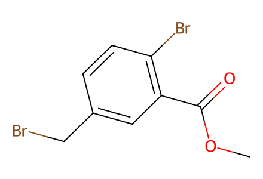
COC(=O)c1cc(CBr)ccc1BrComplete source-shown natural-product route in main Figures 2A/6 and SI 2.5; literature precursor 2-1 is an explicit preparation boundary. Unrelated cyclophane methodology scope/DKR analogues are outside this natural-product route. Atropisomer identity requires metadata beyond ordinary SMILES. Facts compiled deterministically; independent review pending.
完整 JSON · 逐步 CSV · 路线序列 · SDF · HRMS 核对
| 事件 | 分子连接 | 报告产率 | Canonical reaction SMILES |
|---|---|---|---|
| E01 | 1 → 2 | 2: 86% | COC(=O)c1cc(CBr)ccc1Br>>COC(=O)c1cc(C[P+](c2ccccc2)(c2ccccc2)c2ccccc2)ccc1Br.[Br-] |
| E02 | 2 + 2-1 → 3 | 3: 75% | COC(=O)c1cc(C[P+](c2ccccc2)(c2ccccc2)c2ccccc2)ccc1Br.COc1ccc(C=O)cc1-c1cc(C2OCCCO2)ccc1OC.[Br-]>>COC(=O)c1cc(C=Cc2ccc(OC)c(-c3cc(C4OCCCO4)ccc3OC)c2)ccc1Br |
| E03 | 3 + p-anisylboronic acid → 4 | 4: 85% | COC(=O)c1cc(C=Cc2ccc(OC)c(-c3cc(C4OCCCO4)ccc3OC)c2)ccc1Br.COc1ccc(B(O)O)cc1>>COC(=O)c1cc(C=Cc2ccc(OC)c(-c3cc(C4OCCCO4)ccc3OC)c2)ccc1-c1ccc(OC)cc1 |
| E04 | 4 → 5 | 5: 91% | COC(=O)c1cc(C=Cc2ccc(OC)c(-c3cc(C4OCCCO4)ccc3OC)c2)ccc1-c1ccc(OC)cc1>>COC(=O)c1cc(CCc2ccc(OC)c(-c3cc(C=O)ccc3OC)c2)ccc1-c1ccc(OC)cc1 |
| E05 | 5 + methyltriphenylphosphonium bromide → 6 | 6: 85% | COC(=O)c1cc(CCc2ccc(OC)c(-c3cc(C=O)ccc3OC)c2)ccc1-c1ccc(OC)cc1.C[P+](c1ccccc1)(c1ccccc1)c1ccccc1.[Br-]>>C=Cc1ccc(OC)c(-c2cc(CCc3ccc(-c4ccc(OC)cc4)c(C(=O)OC)c3)ccc2OC)c1 |
| E06 | 6 → 1a | 1a: 92% | C=Cc1ccc(OC)c(-c2cc(CCc3ccc(-c4ccc(OC)cc4)c(C(=O)OC)c3)ccc2OC)c1>>C=Cc1ccc(OC)c(-c2cc(CCc3ccc(-c4ccc(OC)cc4)c(C=O)c3)ccc2OC)c1 |
| E07 | 1a → 1aa | 1aa: 80% | C=Cc1ccc(OC)c(-c2cc(CCc3ccc(-c4ccc(OC)cc4)c(C=O)c3)ccc2OC)c1>>COc1ccc2c(c1)/C=C/c1ccc(OC)c(c1)-c1cc(ccc1OC)CCc1ccc-2c(C=O)c1 |
| E08 | 1aa → 7 | not reported | COc1ccc2c(c1)/C=C/c1ccc(OC)c(c1)-c1cc(ccc1OC)CCc1ccc-2c(C=O)c1>>COc1ccc2c(c1)CCc1ccc(OC)c(c1)-c1cc(ccc1OC)CCc1ccc-2c(C=O)c1 |
| E09 | 7 → 8 | 8: 61% | COc1ccc2c(c1)CCc1ccc(OC)c(c1)-c1cc(ccc1OC)CCc1ccc-2c(C=O)c1>>COc1ccc2c(c1)CCc1ccc(OC)c(c1)-c1cc(ccc1OC)CCc1ccc-2c(O)c1 |
| E10 | 8 → Isoplagiochin D | Isoplagiochin D: 87% | COc1ccc2c(c1)CCc1ccc(OC)c(c1)-c1cc(ccc1OC)CCc1ccc-2c(O)c1>>Oc1ccc2c(c1)CCc1ccc(O)c(c1)-c1cc(ccc1O)CCc1ccc-2c(O)c1 |

COC(=O)c1cc(CBr)ccc1Br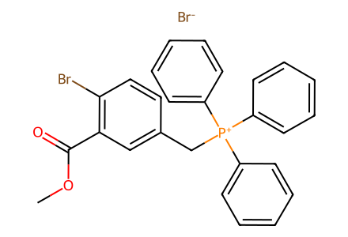
COC(=O)c1cc(C[P+](c2ccccc2)(c2ccccc2)c2ccccc2)ccc1Br.[Br-]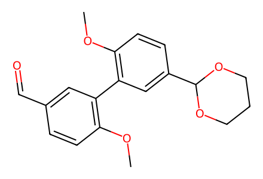
COc1ccc(C=O)cc1-c1cc(C2OCCCO2)ccc1OC
COc1ccc(B(O)O)cc1
C[P+](c1ccccc1)(c1ccccc1)c1ccccc1.[Br-]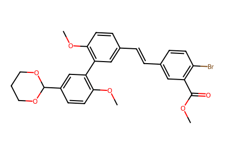
COC(=O)c1cc(C=Cc2ccc(OC)c(-c3cc(C4OCCCO4)ccc3OC)c2)ccc1Br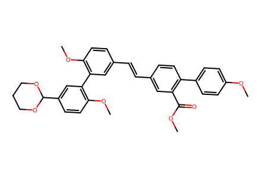
COC(=O)c1cc(C=Cc2ccc(OC)c(-c3cc(C4OCCCO4)ccc3OC)c2)ccc1-c1ccc(OC)cc1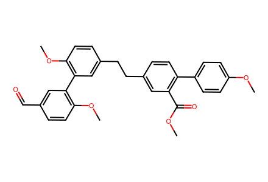
COC(=O)c1cc(CCc2ccc(OC)c(-c3cc(C=O)ccc3OC)c2)ccc1-c1ccc(OC)cc1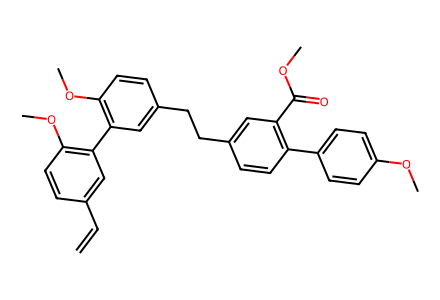
C=Cc1ccc(OC)c(-c2cc(CCc3ccc(-c4ccc(OC)cc4)c(C(=O)OC)c3)ccc2OC)c1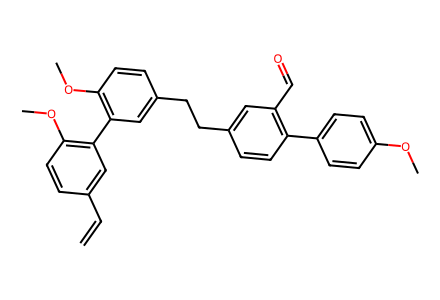
C=Cc1ccc(OC)c(-c2cc(CCc3ccc(-c4ccc(OC)cc4)c(C=O)c3)ccc2OC)c1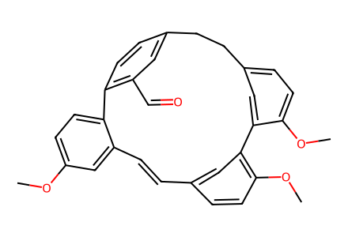
COc1ccc2c(c1)/C=C/c1ccc(OC)c(c1)-c1cc(ccc1OC)CCc1ccc-2c(C=O)c1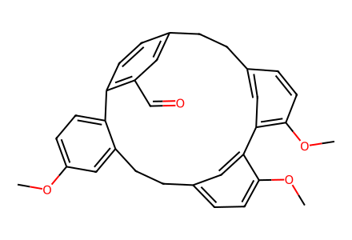
COc1ccc2c(c1)CCc1ccc(OC)c(c1)-c1cc(ccc1OC)CCc1ccc-2c(C=O)c1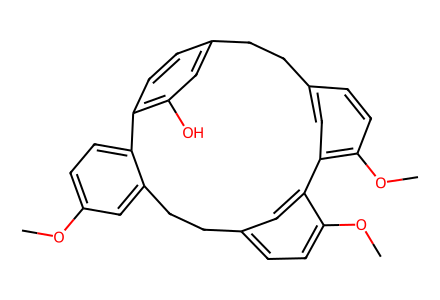
COc1ccc2c(c1)CCc1ccc(OC)c(c1)-c1cc(ccc1OC)CCc1ccc-2c(O)c1
Oc1ccc2c(c1)CCc1ccc(O)c(c1)-c1cc(ccc1O)CCc1ccc-2c(O)c1